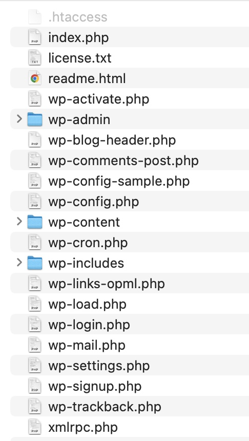
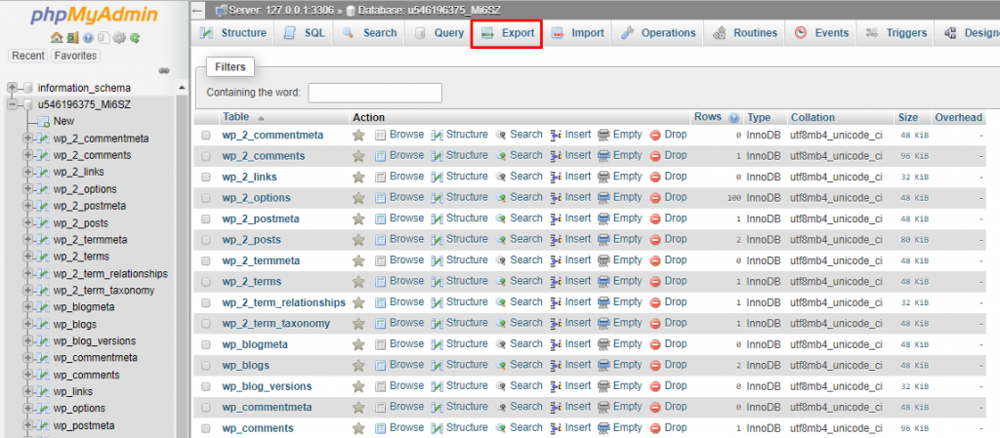

- Depuis l'ordinateur initial : Sauvegardez le dossier contenant les fichiers de votre installation WordPress sur votre outil de sauvegarde habituel (cloud, clé USB, disque dur externe). Le contenu du dossier en question devrait ressembler à ceci : 
- Depuis l'ordinateur initial : Exportez votre base de données via phpMyAdmin. Vous pouvez enregistrer le fichier d'export .sql à côté de votre dossier de projet que vous avez précédemment enregistré. 
- Sur le nouvel ordinateur : Installez MAMP (si ce n'est pas déjà fait).
- Dans htdocs, dupliquez le dossier contenant les fichiers de votre installation WordPress.
- Depuis votre dossier de projet, supprimez votre fichier wp-config.php.
- Sur le nouvel ordinateur : Allez dans phpMyAdmin et créez une nouvelle base de données toute fraîche, idéalement avec le même nom que votre base de données initiale.
- Toujours dans phpMyAdmin, positionné sur votre nouvelle base de données fraîchement créée, importez votre fichier d'export (le fichier .sql).
- Rendez-vous sur localhost/LeCheminDAccesPourSeRendreAuDossierDeProjet
- Suivez les instructions (nom de BD, root, root, localhost, wp-).